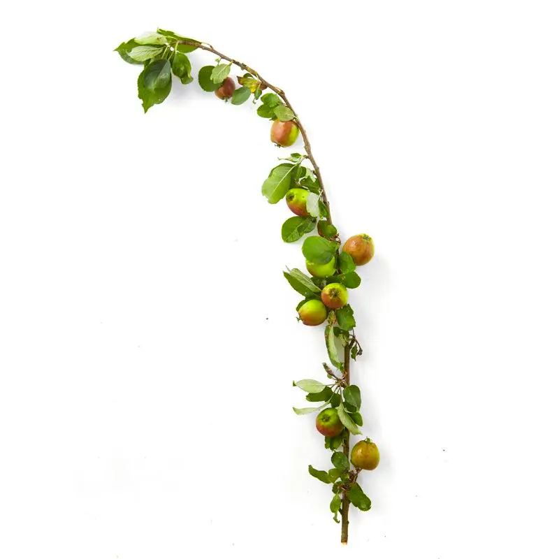

Wild Apple
Wild apple is a collective term for all the mysterious, almost inedible and really delicious apples that grow sporadically around the Danish forests and grasslands. They are nameless apples that nature itself has produced.
How to recognize wild apples
- The small white or pink flowers.
- The small apples are rarely more than 3 to 4 cm in diameter.
- Their shape is either a bush or a small tree.
Where?
Deciduous forests, coniferous forests, cities, fences.
When?
September & October